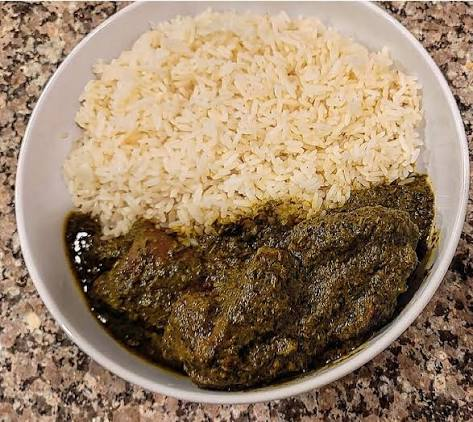

Liberian Potato Greens

Description
Liberian cassava leaf is a rich, hearty, and comforting West African stew made from finely pounded or ground cassava leaves. It is a national staple in Liberia, also known in other regions as saka saka or pondu.
Some variations add a touch of peanut butter to mellow and enhance the flavor. It can be cooked with red palm oil or Argo oil. It is most often cooked as torborgee.
Key Ingredients
- Cassava leaves (fresh, pounded, or frozen)
- A mix of meats such as beef, chicken, goat, or smoked/dried fish
- Aromatics & Spices: Onions, garlic, ginger, scotch bonnet or habanero peppers, and bouillon/stock cubes
- Oil (Fresh red palm oil or Argo oil)
Steps to Cook Cassave Leave Soup
- Harvest Cassava leaves if you have a garden or buy some from the local market
- Pound the leaves into a fine particles
- Put it into the cooking pot and add water
- Add the peppers, and Onions
- Add the verious seasoning of your choice
- Add fish/Meat (this can be raw or dried fish/meat)
- Allow it to cook and enjoy your tasty and delicious meal
Home